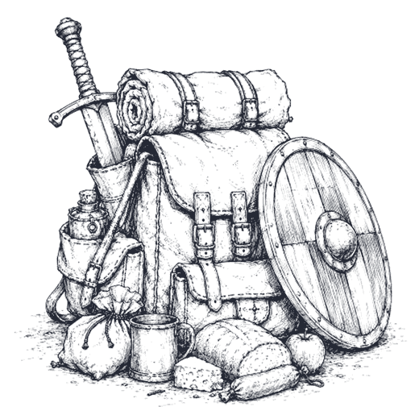
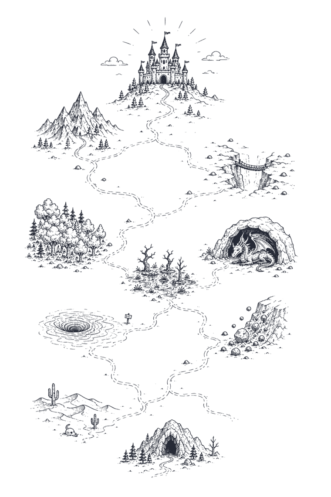
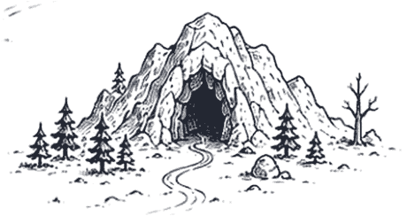
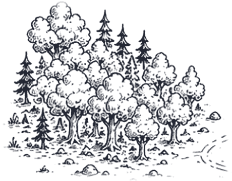
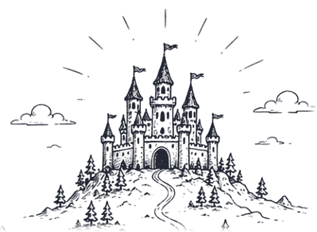
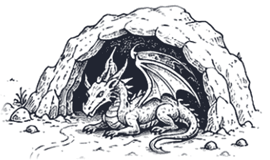

Welcome to the story of your leadership…
The Call to Leadership
A day that changes how your leaders lead. A one-day, story-driven course for schools and organisations, shaped around the real challenges your team faces.
What is The Call to Leadership?
A one-day leadership development course from the AEG Institute of Leadership, drawn from the psychology of how adults develop as leaders, then shaped around the real leadership needs of your school or organisation.
- Duration
- One day, plus follow-up support
- Group size
- 6 to 24 participants
- Format
- In person at your venue; planning and follow-up can be online
- Designed for
- Schools, organisations and their leadership teams
- Follow-up
- Partner check-ins and 90-minute follow-up sessions
- Certification
- Certificate of completion from the AEG Institute of Leadership
Who should attend
- Emerging leaders taking on responsibility for people for the first time
- Developing leaders in middle leadership, ready to widen their range
- Senior leaders who set the culture others work within
- Leaders new to a role who want a clear model for the step up
- Whole teams who want to work together more effectively

A different kind of leadership course
- I
Coherent learning, not disparate tools
Many courses hand leaders a scattering of tools. The Call to Leadership rests on one coherent model, Integral Theory, the metatheory of psychological development. Participants construct the theory themselves, through experiential activities and discussion, so it stays with them.
- II
A powerful way of learning
No slide decks. Story is the vehicle: participants set out on a hero’s journey, with game-based experiences, plenty of rich discussion and a structured workbook that captures the learning as they go.
- III
Bespoke impact
The course is designed to adapt. We focus on the areas of leadership your team most needs, add practical leadership tools, and build case studies from your real challenges.
Six worldviews. One map of leadership.
Every leader, and every organisation, leans towards particular ways of seeing the world. Each has real strengths. Each causes problems when there is too little of it, or too much. Choose a colour to see how it shows up.
Blue
Order & Duty
Structure · standards · responsibility
Inconsistent standards, unclear roles, policies nobody follows.
Rigid rules and slow decisions; initiative is quietly discouraged.
In our commissioning conversations we pinpoint which of these lie behind your team’s challenges, and shape the day to address them directly.
A leadership quest
Like many good stories, this one starts in the middle. Your leaders have already walked endless trails and battled more than a few ogres. On the day they set out again, guided by a mentor and a map, through challenges that mirror the ones they face at work.


Refusing the call
Every hero hesitates. Leaders name the reasons the day won’t help them, and the day returns to them at the end.
In a tavern
A discussion game. Each participant argues from a secret colour card, and the room discovers how differently good people see the same problem.

Into the woods
The reveal: what each perspective offers, where it falls short, and how participants build the map of leadership for themselves.

A gleaming palace
Your own organisation, seen through the map: its centre of gravity, what helps it, and what holds it back.

The dragon’s lair
The moment of truth. Each leader examines where they lead from too narrow a view, and where they need to draw on something different.
The journey home
Values made visible, commitments to change, an accountability partner, and a clear plan for what happens next week.
Shaped around your team
Add the leadership tools you need
Based on the issues your team is facing, the day can include further practical tools:
- Leading change
- Effective delegation
- Tackling poor performance
- Effective line management
- …your issue
Learn through your own case studies
Our commissioning conversations can develop case studies based on the real issues your team is facing. Participants apply the model to situations they recognise, which makes the discussion sharper and the learning easier to carry back to work.
Before, during and after the day
1Before
- Commissioning conversations
- Success criteria agreed
- Content and case studies shaped to your team
2On the day
- The discussion game: arguing from six perspectives
- The reveal: what each perspective offers, and where it falls short
- Building the map together
- Applying it: your organisation, your leadership, your values
- Commitments to change, and an accountability partner
3After
- Partner check-ins at two and four weeks
- 90-minute follow-up sessions after one, two and/or three months
- Optional individual coaching
- 1BeforeSuccess criteria agreed
- 2The dayCommitments formed
- 3Week 2Partner check-in
- 4Week 4Partner check-in
- 5Months 1–3Follow-up sessions
Growth for the individual and the organisation
Each leader will…
- Gain a clear map of how leaders develop
- Strengthen self-awareness through structured, honest reflection
- Learn to recognise the worldviews behind colleagues’ behaviour
- Build the range to lead differently when the situation demands it
- Tackle difficult situations with greater calm and flexibility
- Turn insight into specific commitments
Your organisation will…
- Develop a shared language for leadership across teams
- Engage leaders with the real challenges you face
- Connect individual growth to organisational priorities
- Strengthen accountability through agreed, measurable success criteria
- Turn conflict into understanding
- Apply the learning across the organisation, with follow-up built in
Example: success criteria agreed before the course
| Focus | Beginning | Developing | Strong impact |
|---|---|---|---|
| Listening | Tends to listen mainly to respond. | Listens carefully and asks questions. | Helps others feel heard and understood. |
| Openness to other views | Finds disagreement uncomfortable. | Considers different viewpoints. | Actively welcomes challenge and different perspectives. |
| Handling conflict | May become defensive or avoid challenge. | Responds calmly during disagreement. | Uses difficult conversations to build trust. |
From first conversation to lasting change
- 1
Commissioning conversations
Understanding your team, your culture and your priorities.
- 2
Session design
Tailored to your context, with case studies where useful.
- 3
Delivery
A full-day workshop for your leaders, at your venue.
- 4
Follow-up
Reflection and accountability structures keep the learning live.
Pricing depends on group size and the follow-up you choose. Get in touch for a proposal for your team.
Frequently asked questions
Is it only for schools?
No. The course grew out of developing school leaders, and it works for any leadership team: schools, trusts, charities and businesses. The case studies and examples are shaped to your context.
Can the boss attend alongside their team?
Yes, but with care. A charismatic, pace-setting leader may discourage colleagues from participating fully, so it is often better to arrange cohorts at a similar level: emerging, developing or senior leadership teams.
Can it be run online?
The workshop itself is delivered in person. Commissioning conversations and follow-up sessions can be held online.
Where does the course take place?
At your venue. If you would prefer to take your team off-site, we can help you find somewhere suitable.
What do participants need to prepare?
Nothing. The commissioning conversations beforehand let us aim the learning at the real issues in your team, and potentially write case studies for discussion.
What do participants take away?
Their workbook and commitments, a shared language for leadership, a framework for their further development, and a certificate of completion from the AEG Institute of Leadership.
How will we know it has worked?
Success criteria are agreed transparently before the course, then supported by reflective writing, evidence of new behaviours, accountability partners and follow-up sessions.
How is this different from personality-type training?
Type tools sort people into fixed categories. The Call to Leadership offers a picture of what developed leadership looks like, and a path towards it that every leader can follow.
AEG Institute of Leadership
Aldenham Education Group is a global education organisation that develops, acquires and manages K–12 schools and early years centres. Its heritage lies in two historic schools in the UK, including Aldenham School in Hertfordshire, founded in 1597, and the group runs schools and academies internationally.
The AEG Institute of Leadership brings the group’s experience of developing leaders to schools and organisations in the UK and beyond.
Luke Harding
As the senior leader responsible for developing the capacity of colleagues, I grew frustrated with leadership courses that promised transformation but delivered confusion — leaders handed a scattering of tools instead of a shared vision of what excellent leadership actually looks like. My epiphany came while studying developmental psychology during my MBA: there was a better way to help leaders grow.
The Call to Leadership draws on a background in education and creative writing as much as it does on leadership theory — active learning and story archetypes turn out to have a particular power to unlock personal reflection and change.
Our mission is to empower leaders at every level.
- More than 20 years in education across the UK, Italy and Thailand
- Director of Education, Aldenham Education Group
- Founder, Harding Consultancy
- First Class, English, University of Oxford
- MBA in Educational Leadership (Distinction), UCL
- Qualified Level 5 Professional Coach
Book a commissioning conversation
Tell me a little about your team. We’ll arrange a short conversation to understand your priorities, with no obligation.
Or email me directly at luke@hardingconsultancy.co.uk.
Thank you — your message has been sent. I'll be in touch soon.